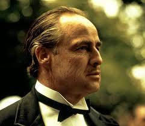
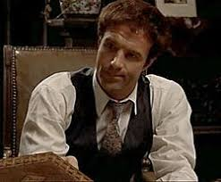

Character Development in The Godfather
The Godfather features some of the most complex and well-developed characters in cinematic history. Each character undergoes significant transformation throughout the trilogy.
Main Character Profiles
Vito Corleone
Vito Andolini Corleone is the patriarch of the Corleone family, as well as leader of the Corleone crime family. He appears in Mario Puzo's novel The Godfather and in the first two films of the trilogy. He is portrayed by Marlon Brando in The Godfather and as a young man by Robert De Niro in The Godfather Part II. Brando and De Niro both winning Oscars for their performances marked the first time two separate actors won Oscars for portraying the same character.
Famous Quote: “I'm gonna make him an offer he can't refuse.”
Michael Corleone

Michael Corleone is the protagonist of Mario Puzo's novel The Godfather and Francis Ford Coppola's film trilogy based on the novel. He is the third son of Vito and Carmela Corleone. He is portrayed by Al Pacino in the films. His journey from family outsider to ruthless Mafia boss and eventual redemption is the central focus of the novel and the films.
Famous Quote: “It’s not personal, it’s strictly business.”
Sonny Corleone
Santino “Sonny” Corleone is the oldest son of the Vito and Carmela Corleone. He has two brothers, Fredo and Michael, and a sister, Connie. Sonny's hot-tempered nature eventually leads to his early death.
Sonny appears in Mario Puzo's 1969 novel The Godfather and its 1972 film adaptation. In the film, Sonny was portrayed by James Caan, who reprised his role for a flashback scene in The Godfather Part II. Roman Coppola played Sonny as a boy in the 1920s scenes of The Godfather Part II.
Famous Quote: “What’s the matter with you?!”
Famous Quotes - Audio Collection
"I'm gonna make him an offer he can't refuse."
- Vito Corleone (Marlon Brando)
"It's not personal, it's strictly business."
- Michael Corleone (Al Pacino)
"Leave the gun, take the cannoli."
- Peter Clemenza (Richard S. Castellano)